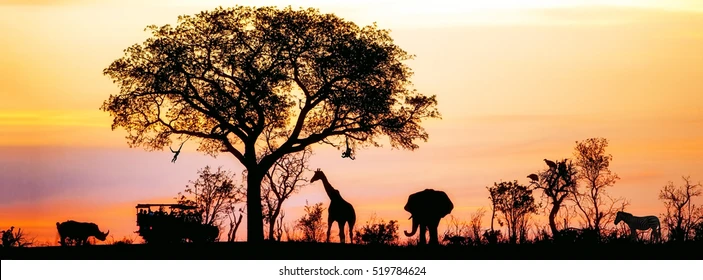
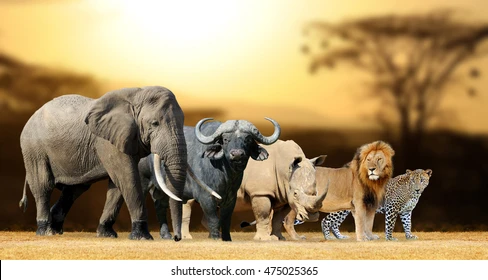
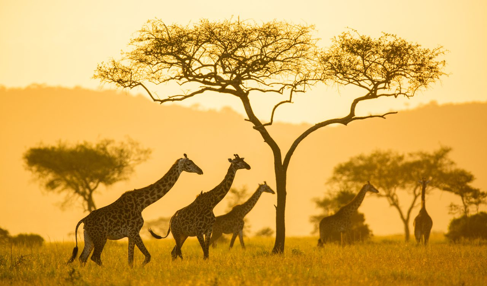
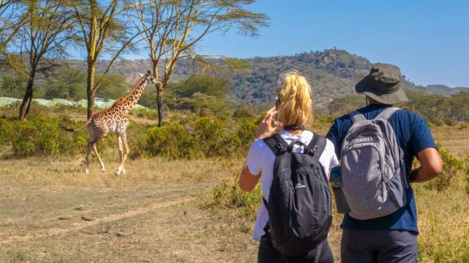
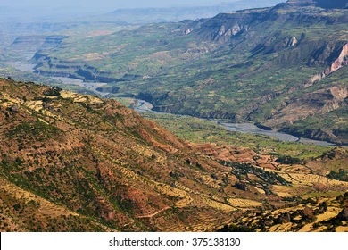
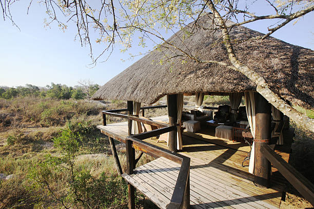

Welcome to My Blog
Exploring the depths of creativity and beyond.
About Safari
The original safari dates back to the 14th century when Arabs made trading trips to east Africa. They weren't interested in wildlife back then as their primary focus was trade, but these journeys, like classic safaris, were planned for months, hence the term safari.
More about safari
Hosted Royalties Queen Elizabeth II was not the only royal to have gone on a safari adventure in Kenya. In fact, a great number of royals have also made the journey to this African gem to catch a glimpse of the big five. Following his mother’s footsteps, Prince Charles has also visited the Masai Mara national reserve, where he camped on the hills of Ol Donyo Oseyia. You’d also be interested to know that Kenya is also where Prince William proposed to then Kate Middleton while on a safari in 2010!
In addition safari...has
- Maasai Mara National Reserve: One of Kenya's most famous safari destinations, Maasai Mara is known for the annual wildebeest migration, where millions of wildebeest, zebras, and other antelopes migrate from Tanzania's Serengeti to Kenya's Maasai Mara in search of greener pastures.
- Big Five: Kenya is home to the Big Five game animals: lion, elephant, buffalo, leopard, and rhinoceros. Seeing all of these majestic animals in their natural habitat is a highlight of any Kenyan safari. 
- Mount Kenya: Kenya's highest mountain, Mount Kenya, offers a unique safari experience for those interested in m ountain climbing and trekking. It's also surrounded by protected areas that are home to various wildlife species. 
- Amboseli National Park: Known for its large herds of elephants and stunning views of Mount Kilimanjaro, Amboseli National Park provides an iconic backdrop for safari experiences in Kenya.
- Encounters: Kenyan safaris often include opportunities to visit local communities such as the Maasai and Samburu tribes, providing insights into their traditional way of life, culture, and customs. 
- Birdwatching Paradise: With over 1,000 species of birds, Kenya is a paradise for birdwatchers. From colorful kingfishers to majestic eagles, the country's diverse habitats offer ample opportunities for birdwatching enthusiasts.
- Great Rift Valley: The Great Rift Valley, which runs through Kenya, offers breathtaking scenery and unique geological formations. Many safari itineraries include stops at viewpoints overlooking the valley. 
- Tsavo National Parks: Tsavo East and Tsavo West National Parks together form one of the largest wildlife sanctuaries in the world, offering a rugged and remote safari experience with diverse landscapes and wildlife.
- Luxury Safari Lodges: Kenya boasts a wide range of luxury safari lodges and tented camps, providing guests with unparalleled c omfort and service amidst the wilderness. 
- Conservation Efforts: Kenya has been at the forefront of wildlife conservation efforts, with numerous national parks, reserves, and community-based conservation initiatives aimed at protecting its diverse ecosystems and wildlife species.
.jpeg)
.jpeg)
Contact Me
Have any questions or just want to say hi? Feel free to reach out to me!